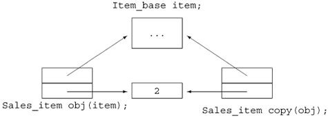

15.8. Handle Classes and InheritanceOne of the ironies of object-oriented programming in C++ is that we cannot use objects to support it. Instead, we must use pointers and references, not objects. For example, in the following code fragment,
void get_prices(Item_base object,
const Item_base *pointer,
const Item_base &reference)
{
// which version of net_price is called is determined at run time
cout << pointer->net_price(1) << endl;
cout << reference.net_price(1) << endl;
// always invokes Item_base::net_price
cout << object.net_price(1) << endl;
}
the invocations through pointer and reference are resolved at run time based on the dynamic types of the object to which they are bound. Unfortunately, using pointers or references puts a burden on the users of our classes. We saw one such burden in the previous section that discussed the inter-actions between objects of inherited types and containers. A common technique in C++ is to define a so-called cover or handle class. The handle class stores and manages a pointer to the base class. The type of the object to which that pointer points will vary; it can point at either a base- or a derived-type object. Users access the operations of the inheritance hierarchy through the handle. Because the handle uses its pointer to execute those operations, the behavior of virtual members will vary at run time depending on the kind of object to which the handle is actually bound. Users of the handle thus obtain dynamic behavior but do not themselves have to worry about managing the pointer. Handles that cover an inheritance hierarchy have two important design considerations:
There is no one right choice among these options; the decisions depend on the details of the hierarchy and how the class designer wants programmers to interact with those class(es). In the next two sections, we'll implement two different kinds of handles that address these design questions in different ways. 15.8.1. A Pointerlike HandleAs our first example, we'll define a pointerlike handle class, named Sales_item, to represent our Item_base hierarchy. Users of Sales_item will use it as if it were a pointer: Users will bind a Sales_item to an object of type Item_base and will then use the * and -> operations to execute Item_base operations:
// bind a handle to a Bulk_item object
Sales_item item(Bulk_item("0-201-82470-1", 35, 3, .20));
item->net_price(); // virtual call to net_price function
However, users won't have to manage the object to which the handle points; the Sales_item class will do that part of the job. When users call a function through a Sales_item, they'll get polymorphic behavior. Defining the HandleWe'll give our class three constructors: a default constructor, a copy constructor, and a constructor that takes an Item_base. This third constructor will copy the Item_base and ensure that the copy stays around as long as the Sales_item does. When we copy or assign a Sales_item, we'll copy the pointer rather than copying the object. As with our other pointerlike handle classes, we'll use a use count to manage the copies. The use-counted classes we've used so far have used a companion class to store the pointer and associated use count. In this class, we'll use a different design, as illustrated in Figure 15.2. The Sales_item class will have two data members, both of which are pointers: One pointer will point to the Item_base object and the other will point to the use count. The Item_base pointer might point to an Item_base object or an object of a type derived from Item_base. By pointing to the use count, multiple Sales_item objects can share the same counter. Figure 15.2. Use-Count Strategy for the Sales_item Handle Class In addition to managing the use count, the Sales_item class will define the dereference and arrow operators:
// use counted handle class for the Item_base hierarchy
class Sales_item {
public:
// default constructor: unbound handle
Sales_item(): p(0), use(new std::size_t(1)) { }
// attaches a handle to a copy of the Item_base object
Sales_item(const Item_base&);
// copy control members to manage the use count and pointers
Sales_item(const Sales_item &i):
p(i.p), use(i.use) { ++*use; }
~Sales_item() { decr_use(); }
Sales_item& operator=(const Sales_item&);
// member access operators
const Item_base *operator->() const { if (p) return p;
else throw std::logic_error("unbound Sales_item"); }
const Item_base &operator*() const { if (p) return *p;
else throw std::logic_error("unbound Sales_item"); }
private:
Item_base *p; // pointer to shared item
std::size_t *use; // pointer to shared use count
// called by both destructor and assignment operator to free pointers
void decr_use()
{ if (--*use == 0) { delete p; delete use; } }
};
Use-Counted Copy ControlThe copy-control members manipulate the use count and the Item_base pointer as appropriate. Copying a Sales_item involves copying the two pointers and incrementing the use count. The destructor decrements the use count and destroys the pointers if the count goes to zero. Because the assignment operator will need to do the same work, we implement the destructor's actions in a private utility function named decr_use. The assignment operator is a bit more complicated than the copy constructor:
// use-counted assignment operator; use is a pointer to a shared use count
Sales_item&
Sales_item::operator=(const Sales_item &rhs)
{
++*rhs.use;
decr_use();
p = rhs.p;
use = rhs.use;
return *this;
}
The assignment operator acts like the copy constructor in that it increments the use count of the right-hand operand and copies the pointer. It also acts like the destructor in that we first have to decrement the use count of the left-hand operand and then delete the pointers if the use count goes to zero. As usual with an assignment operator, we must protect against self-assignment. This operator handles self-assignment by first incrementing the use count in the right-hand operand. If the left- and right-hand operands are the same, the use count will be at least 2 when decr_use is called. That function decrements and checks the use count of the left-hand operand. If the use count goes to zero, then decr_use will free the Item_base and use objects currently in this object. What remains is to copy the pointers from the right-hand to the left-hand operand. As usual, our assignment operator returns a reference to the left-hand operand. Aside from the copy-control members, the only other functions Sales_item defines are the operator functions, operator* and operator->. Users will access Item_base members through these operators. Because these operators return a pointer and reference, respectively, functions called through these operators will be dynamically bound. We define only the const versions of these operators because the public members in the underlying Item_base hierarchy are all const. Constructing the HandleOur handle has two constructors: the default constructor, which creates an un-bound Sales_item, and a second constructor, which takes an object to which it attaches the handle. The first constructor is easy: We set the Item_base pointer to 0 to indicate that this handle is not attached to any object. The constructor allocates a new use counter and initializes it to 1. The second constructor is more difficult. We'd like users of our handle to create their own objects, to which they could attach a handle. The constructor will allocate a new object of the appropriate type and copy the parameter into that newly allocated object. That way the Sales_item class will own the object and can guarantee that the object is not deleted until the last Sales_item attached to the object goes away. 15.8.2. Cloning an Unknown TypeTo implement the constructor that takes an Item_base, we must first solve a problem: We do not know the actual type of the object that the constructor is given. We know that it is an Item_base or an object of a type derived from Item_base. Handle classes often need to allocate a new copy of an existing object without knowing the precise type of the object. Our Sales_item constructor is a good example.
To support our handle class, we'll need to add clone to each of the types in the hierarchy, starting with the base class, which must define the function as virtual:
class Item_base {
public:
virtual Item_base* clone() const
{ return new Item_base(*this); }
};
Each class must now redefine the virtual. Because the function exists to generate a new copy of an object of the class, we'll define the return type to reflect the type of the class itself:
class Bulk_item : public Item_base {
public:
Bulk_item* clone() const
{ return new Bulk_item(*this); }
};
On page 564 we said there is one exception to the requirement that the return type of the derived class must match exactly that of the base class instance. That exception supports cases such as this one. If the base instance of a virtual function returns a reference or pointer to a class type, the derived version of the virtual may return a class publicly derived from the class returned by the base class instance (or a pointer or a reference to a class type). Defining the Handle ConstructorsOnce the clone function exists, we can write the Sales_item constructor:
Sales_item::Sales_item(const Item_base &item):
p(item.clone()), use(new std::size_t(1)) { }
Like the default constructor, this constructor allocates and initializes its use count. It calls clone on its parameter to generate a (virtual) copy of that object. If the argument is an Item_base, then the clone function for Item_base is run; if the argument is a Bulk_item, then the Bulk_item clone is executed.
15.8.3. Using the HandleUsing Sales_item objects, we could more easily write our bookstore application. Our code wouldn't need to manage pointers to the Item_base objects, yet the code would obtain virtual behavior on calls made through a Sales_item. As an example, we could use Item_base objects to solve the problem proposed in Section 15.7 (p. 597). We could use Sales_items to keep track of the purchases a customer makes, storing a Sales_item representing each purchase in a multiset. When the customer was done shopping, we would total the sale. Comparing Two Sales_itemsBefore writing the function to total a sale, we need to define a way to compare Sales_items. To use Sales_item as the key in an associative container, we must be able to compare them (Section 10.3.1, p. 360). By default, the associative containers use the less-than operator on the key type. However, for the same reasons discussed about our original Sales_item type in Section 14.3.2 (p. 520), defining operator< for the Sales_item handle would be a bad idea: We want to take only the ISBN into account when we use Sales_item as a key, but want to consider all data members when determining equality. Fortunately, the associative containers allow us to specify a function (or function object (Section 14.8, p. 530)) to use as the comparison function. We do so similarly to the way we passed a separate function to the stable_sort algorithm in Section 11.2.3 (p. 403). In that case, we needed only to pass an additional argument to stable_sort to provide a comparison function to use in place of the < operator. Overriding an associative container's comparison function is a bit more complicated because, as we shall see, we must supply the comparison function when we define the container object. Let's start with the easy part, which is to define a function to use to compare Sales_item objects:
// compare defines item ordering for the multiset in Basket
inline bool
compare(const Sales_item &lhs, const Sales_item &rhs)
{
return lhs->book() < rhs->book();
}
Our compare function has the same interface as the less-than operator. It returns a bool and takes two const references to Sales_items. It compares the parameters by comparing their ISBNs. This function uses the Sales_item -> operator, which returns a pointer to an Item_base object. That pointer is used to fetch and run the book member, which returns the ISBN. Using a Comparator with an Associative ContainerIf we think a bit about how the comparison function is used, we'll realize that it must be stored as part of the container. The comparison function is used by any operation that adds or finds an element in the container. In principle, each of these operations could take an optional extra argument that represented the comparison function. However, this strategy would be error-prone: If two operations used different comparison functions, then the ordering would be inconsistent. It's impossible to predict what would happen in practice. To work effectively, an associative container needs to use the same comparison function for every operation. Yet, it is unreasonable to expect users to remember the comparison function every time, especially when there is no way to check that each call uses the same comparison function. Therefore, it makes sense for the container to remember the comparison function. By storing the comparator in the container object, we are assured that every operation that compares elements will do so consistently. For the same reasons that the container needs to know the element type, it needs to know the comparator type in order to store the comparator. In principle, the container could infer this type by assuming that the comparator is pointer to a function that returns a bool and takes references to two objects of the key_type of the container. Unfortunately, this inferred type would be overly restrictive. For one thing, we should allow the comparator to be a function object as well as a plain function. Even if we were willing to require that the comparator be a function, the inferred type would still be too restrictive. After all, the comparison function might return an int or any other type that can be used in a condition. Similarly, the parameter type need not exactly match the key_type. Any parameter type that is convertible to the key_type should also be allowed. So, to use our Sales_item comparison function, we must specify the comparator type when we define the multiset. In our case, that type is a function that returns a bool and takes two const Sales_item references. We'll start by defining a typedef that is a synonym for this type (Section 7.9, p. 276):
// type of the comparison function used to order the multiset
typedef bool (*Comp)(const Sales_item&, const Sales_item&);
This statement defines Comp as a synonym for the pointer to function type that matches the comparison function we wish to use to compare Sales_item objects. Next we'll need to define a multiset that holds objects of type Sales_item and that uses this Comp type for its comparison function. Each constructor for the associative containers allows us to supply the name of the comparison function. We can define an empty multiset that uses our compare function as follows:
std::multiset<Sales_item, Comp> items(compare);
This definition says that items is a multiset that holds Sales_item objects and uses an object of type Comp to compare them. The multiset is emptywe supplied no elementsbut we did supply a comparison function named compare. When we add or look for elements in items our compare function will be used to order the multiset. Containers and Handle ClassesNow that we know how to supply a comparison function, we'll define a class, named Basket, to keep track of a sale and calculate the purchase price:
class Basket {
// type of the comparison function used to order the multiset
typedef bool (*Comp)(const Sales_item&, const Sales_item&);
public:
// make it easier to type the type of our set
typedef std::multiset<Sales_item, Comp> set_type;
// typedefs modeled after corresponding container types
typedef set_type::size_type size_type;
typedef set_type::const_iterator const_iter;
Basket(): items(compare) { } // initialze the comparator
void add_item(const Sales_item &item)
{ items.insert(item); }
size_type size(const Sales_item &i) const
{ return items.count(i); }
double total() const; // sum of net prices for all items in the basket
private:
std::multiset<Sales_item, Comp> items;
};
This class holds the customer's purchases in a multiset of Sales_item objects. We use a multiset to allow the customer to buy multiple copies of the same book. The class defines a single constructor, the Basket default constructor. The class needs its own default constructor to pass compare to the multiset constructor that builds the items member. The operations that the Basket class defines are fairly simple: add_item takes a reference to a Sales_item and puts a copy of that item into the multiset; item_count returns the number of records for this ISBN in the basket for a given ISBN. In addition to the operations, Basket defines three typedefs to make it easier to use its multiset member. Using the Handle to Execute a Virtual FunctionThe only complicated member of class Basket is the total function, which returns the price for all the items in the basket:
double Basket::total() const
{
double sum = 0.0; // holds the running total
/* find each set of items with the same isbn and calculate
* the net price for that quantity of items
* iter refers to first copy of each book in the set
* upper_bound refers to next element with a different isbn
*/
for (const_iter iter = items.begin();
iter != items.end(); iter =
items.upper_bound(*iter))
{
// we know there's at least one element with this key in the Basket
// virtual call to net_price applies appropriate discounts, if any
sum += (*iter)->net_price(items.count(*iter));
}
return sum;
}
The total function has two interesting parts: the call to the net_price function, and the structure of the for loop. We'll look at each in turn. When we call net_price, we need to tell it how many copies of a given book are being purchased. The net_price function uses this argument to determine whether the purchase qualifies for a discount. This requirement implies that we'd like to process the multiset in chunksprocessing all the records for a given title in one chunk and then the set of those for the next title and so on. Fortunately, multiset is well suited to this problem. Our for loop starts by defining and initializing iter to refer to the first element in the multiset. We use the multiset count member (Section 10.3.6, p. 367) to determine how many elements in the multiset have the same key (e.g., same isbn) and use that number as the argument to the call to net_price. The interesting bit is the "increment" expression in the for. Rather than the usual loop that reads each element, we advance iter to refer to the next key. We skip over all the elements that match the current key by calling upper_bound (Section 10.5.2, p. 377). The call to upper_bound returns the iterator that refers to the element just past the last one with the same key as in iter. That iterator we get back denotes either the end of the set or the next unique book. We test the new value of iter. If iter is equal to items.end(), we drop out of the for. Otherwise, we process the next book. The body of the for calls the net_price function. That call can be a bit tricky to read:
sum += (*iter)->net_price(items.count(*iter));
We dereference iter to get the underlying Sales_item to which we apply the overloaded arrow operator from the Sales_item class. That operator returns the underlying Item_base object to which the handle is attached. From that object we call net_price, passing the count of items with the same isbn. The net_price function is virtual, so the version of the pricing function that is called depends on the type of the underlying Item_base object. |